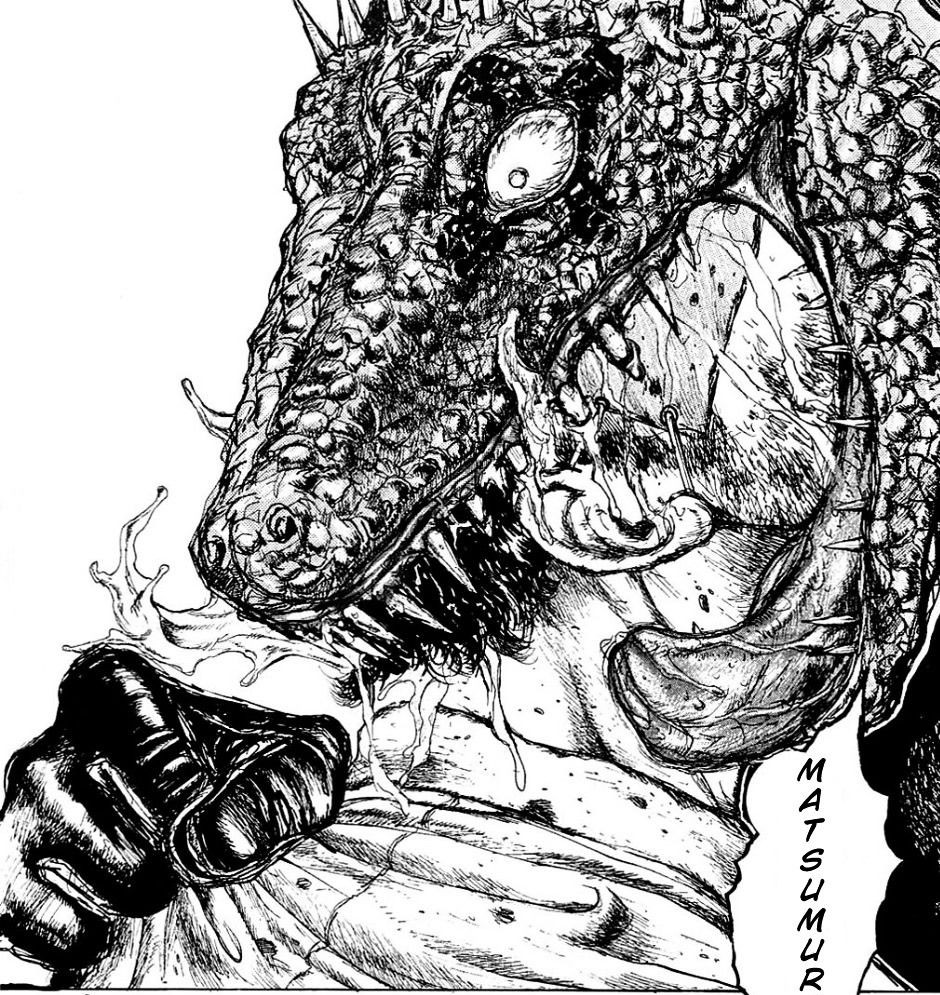
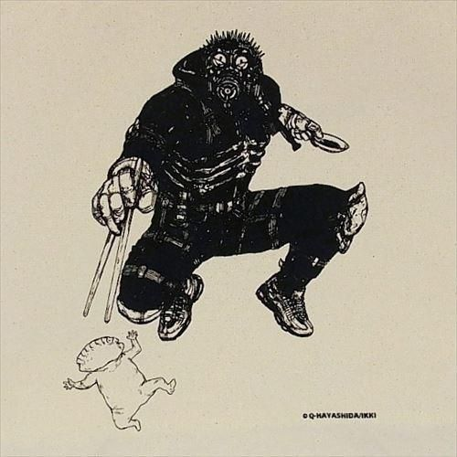
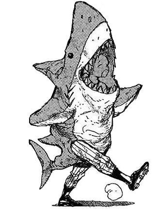

Dorohedoro“He who always smiles no matter what is most vicious”

In chapter 1 we meet Kaiman, a man with a lizard head and his friend Nikaido who works at a gyoza restaurant. Kaiman has lost his memory and doesn't know who turned his head into a Lizards but remembers the outline of a man

The city this story takes place in is called The Hole, it is the slums where wizards come to practice their magic on humans. Nikaido has a run in with a wizard who partially turns her into a bug as punishment for insulting him. Kaiman arrives just in time to fill the magic user

Kaiman has a man in the back of his throat, in order to find out who it is he has Nikaido try to take pictures but to no avail they come out blurry. Later on they run into another magic user and in the chaos of battle, Kaiman accidentally rips her face off with his teeth.